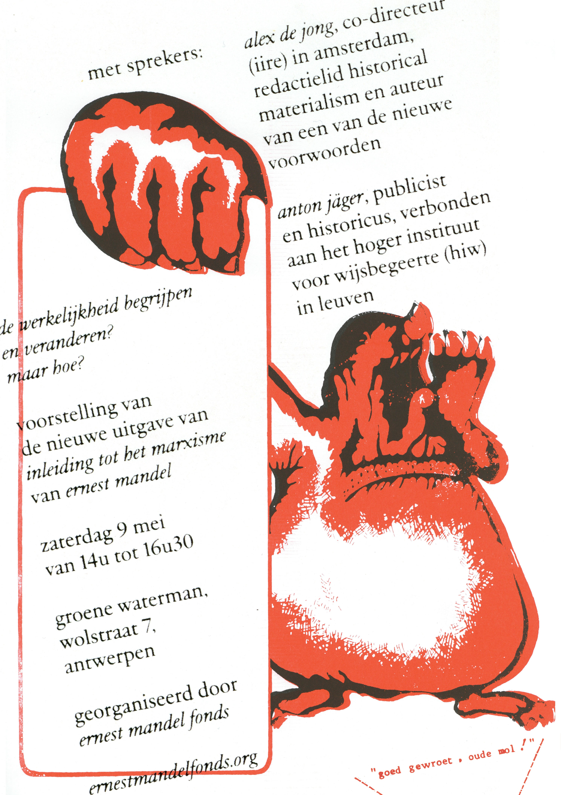

Varianten voor auteur + titel
Alle varianten gebruiken: "Lees de bijdragen aan deze boekvoorstelling:"
A. auteur. cursieve titel

De wereld staat in brand. Grootschalige oorlogen zijn terug van nooit weggeweest.
B. auteur: cursieve titel
De wereld staat in brand. Grootschalige oorlogen zijn terug van nooit weggeweest.
C. cursieve titel - auteur
De wereld staat in brand. Grootschalige oorlogen zijn terug van nooit weggeweest.
D. auteur op eigen regel, titel eronder
De wereld staat in brand. Grootschalige oorlogen zijn terug van nooit weggeweest.